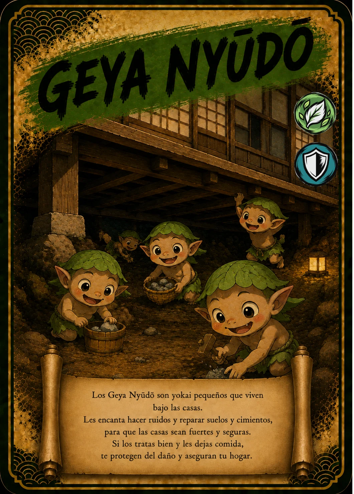

↗ Tocá la carta para verla en grande
EL ÁLBUM TAIKARDS · CARTA 09 / 48
GEYA NYŪDŌ
Los vecinos bajo el suelo
- Naturaleza / elemento
- 🌿 Bosque
- Tipo
- 🛡 Defensa
📖 Te cuento mi historia
Debajo de una casa se escuchan golpecitos. En la versión de esta carta, los Geya Nyūdō son pequeños vecinos que reparan el suelo y los cimientos. Trabajan juntos para que el hogar sea fuerte y seguro. Casi nadie los ve, pero su historia nos recuerda algo hermoso: muchas veces, quienes nos cuidan hacen pequeñas tareas que pasan desapercibidas.
Versión infantil basada en la carta de TAIKARDS. Sus personajes y aventuras pueden ser diferentes de las leyendas tradicionales. La naturaleza y el tipo corresponden a la clasificación del juego.
← Volver a todas las cartas